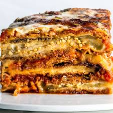

Eggplant Parmagiana

Description
a classic Italian-American dish featuring layers of thinly sliced, breaded, and fried eggplant, topped with a rich tomato sauce and melted mozzarella cheese, often with a sprinkle of parmesan cheese as well; the whole assembly is baked until golden and bubbly, creating a satisfyingly layered and cheesy meal.
Directions
- To roast the eggplant: Preheat the oven to 425 degrees Fahrenheit with racks in the lower and upper thirds of the oven. Line two large rimmed, baking sheets with parchment paper for easy cleanup.
- Slice off both rounded ends on one eggplant, then stand it up on its widest flat side. Slice through the eggplant vertically to make long, even slabs ¼- to ½-inch-thick. Discard both of the sides that are covered in eggplant skin. Repeat with the other eggplant(s).
- Brush both sides of the eggplant slabs lightly with olive oil (you’ll likely need about ¼ cup oil). Arrange them in a single layer on the prepared baking sheets. Sprinkle the top sides with a few dashes of salt and pepper. Roast until golden and tender, about 22 to 27 minutes—halfway through baking, rotate the pans 180 degrees and swap their positions (move pan on lower rack to upper rack, and vice versa). The pan on the lower rack might need a few extra minutes in the oven to turn golden. Set aside.
- Meanwhile, to make the tomato sauce: In a medium saucepan over medium heat, warm 2 tablespoons olive oil until shimmering. Add the onion and a pinch of salt. Cook, stirring occasionally, until the onion is very tender and translucent, about 4 to 7 minutes.
- Add the garlic and tomato paste. Cook, while stirring, about 1 minute. Add the crushed tomatoes, stir to combine, and bring the mixture to a simmer. Once simmering, reduce the heat to medium-low and simmer until the sauce has thickened nicely, about 15 minutes. Remove the pot from the heat and stir in the chopped basil, vinegar, salt and red pepper flakes. Taste, and add more salt if necessary (I usually add another ¼ teaspoon).
- When you’re ready to assemble, spread about ¾ cup of the sauce in the bottom of a 9” square baker. Arrange about one-third of the eggplant slices over the sauce, overlapping slightly (cut them to fit, if necessary). Spoon another ¾ cup of the sauce over the eggplant and sprinkle with ¼ cup mozzarella cheese.
- Bake on the lower rack at 425 degrees Fahrenheit, uncovered, until the sauce bubbles and the top is golden, about 20 to 25 minutes. Let it cool for at least 15 minutes to give it time to set, then chop and sprinkle additional basil on top. Slice with a sharp knife and serve.
- Leftovers keep well, covered and refrigerated, for about 4 days. Reheat before serving.